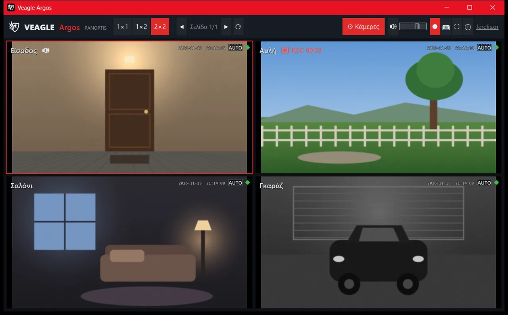
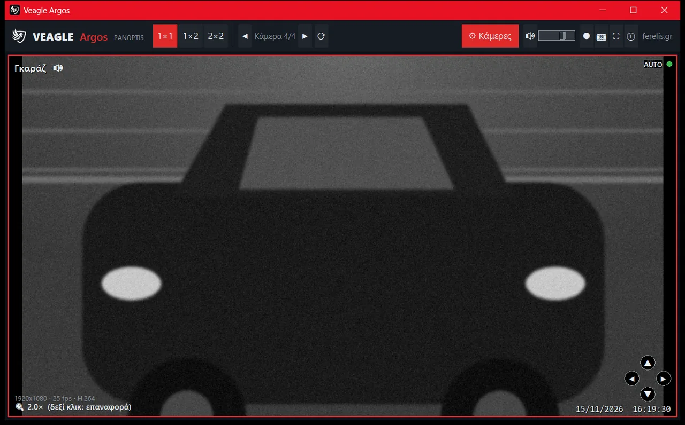
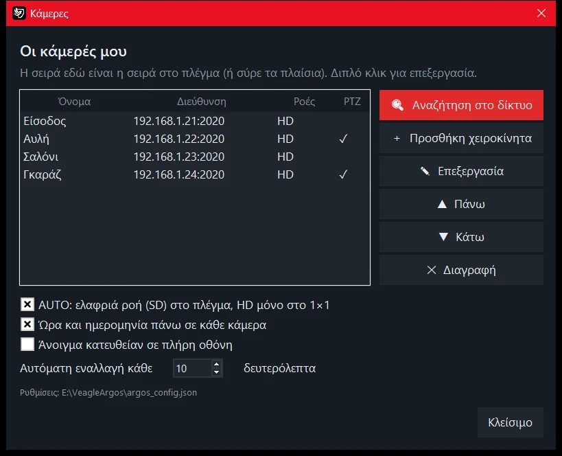
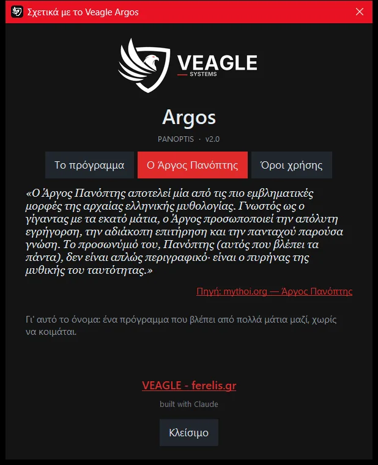

All your home cameras on one screen. A free, portable Windows program for ONVIF / RTSP cameras: no install, no account, no cloud. It even runs from a USB stick.
Όλες οι κάμερες του σπιτιού σε μία οθόνη. Δωρεάν φορητό πρόγραμμα για Windows για κάμερες ONVIF / RTSP: χωρίς εγκατάσταση, χωρίς λογαριασμό, χωρίς cloud. Τρέχει ακόμη και από στικάκι.
Download for WindowsΛήψη για Windows How to use itΠώς το χρησιμοποιώ
2×2 layout: sound from the selected camera (🔊) and a recording in progress (⏺ REC). The pictures are demo scenes.
Διάταξη 2×2: ήχος από την επιλεγμένη κάμερα (🔊) και εγγραφή σε εξέλιξη (⏺ REC). Οι εικόνες είναι δοκιμαστικές σκηνές.
One camera, two side by side, or four at once. Pages for more cameras, double-click to enlarge one, and automatic cycling for a second monitor.Μία κάμερα, δύο δίπλα-δίπλα ή τέσσερις μαζί. Σελίδες για περισσότερες κάμερες, διπλό κλικ για να μεγαλώσει μία, και αυτόματη εναλλαγή για δεύτερη οθόνη.
Searches your home network for ONVIF cameras. Type the camera's user name and password and it fetches the HD and SD streams by itself. Plain RTSP addresses work too.Ψάχνει στο δίκτυο του σπιτιού για κάμερες ONVIF. Γράφεις το όνομα χρήστη και τον κωδικό της κάμερας και βρίσκει μόνο του τις ροές HD και SD. Δουλεύει και με σκέτη διεύθυνση RTSP.
Click a camera to hear it, click again to stop. One volume slider and a mute button for the whole program.Κλικ σε μια κάμερα για να την ακούς, ξανά κλικ για να σταματήσει. Ένα slider έντασης και κουμπί σίγασης για όλο το πρόγραμμα.
Mouse wheel zooms up to 8× where you point. Hold the mouse button to move around the picture, right-click to reset.Η ροδέλα κάνει ζουμ έως 8× εκεί που δείχνεις. Κρατάς πατημένο το ποντίκι για να μετακινήσεις την εικόνα, δεξί κλικ για επαναφορά.
A small AUTO / HD / SD button on every camera: high quality where you need it, a light stream where you don't.Μικρό κουμπί AUTO / HD / SD σε κάθε κάμερα: υψηλή ανάλυση όπου τη χρειάζεσαι, ελαφριά ροή όπου όχι.
Arrows appear on cameras that can pan and tilt, such as the TP-Link Tapo C210 and C520WS.Βελάκια εμφανίζονται στις κάμερες που γυρίζουν, όπως οι TP-Link Tapo C210 και C520WS.
Record any camera in HD to an .mp4 that plays everywhere, with sound. Snapshots in full resolution. Both are saved next to the program.Εγγραφή οποιασδήποτε κάμερας σε HD, σε .mp4 που παίζει παντού, με ήχο. Στιγμιότυπα σε πλήρη ανάλυση. Αποθηκεύονται δίπλα στο πρόγραμμα.
One .exe and nothing else to download. Settings, snapshots and recordings stay in the same folder, so the whole thing travels on a USB stick.Ένα .exe και τίποτα άλλο για κατέβασμα. Ρυθμίσεις, στιγμιότυπα και εγγραφές μένουν στον ίδιο φάκελο, οπότε όλο ταξιδεύει σε ένα στικάκι.

1×1 with 2× digital zoom, PTZ arrows and date and time on the picture.
1×1 με ψηφιακό ζουμ 2×, βελάκια PTZ και ώρα πάνω στην εικόνα.

The Cameras window: search the network, add, reorder, settings.
Το παράθυρο «Κάμερες»: αναζήτηση στο δίκτυο, προσθήκη, σειρά, ρυθμίσεις.
Veagle Argos talks only to the cameras on your own network. It has no cloud, no account, no tracking and sends no data anywhere. Camera settings and passwords are stored only in the file argos_config.json next to the program, in plain text: keep the USB stick somewhere safe, and give a friend only the .exe, not that file.
Το Veagle Argos μιλά μόνο με τις κάμερες του δικού σου δικτύου. Δεν έχει cloud, λογαριασμό ή παρακολούθηση και δεν στέλνει δεδομένα πουθενά. Οι ρυθμίσεις και οι κωδικοί των καμερών αποθηκεύονται μόνο στο αρχείο argos_config.json δίπλα στο πρόγραμμα, σε απλό κείμενο: φύλαξε το στικάκι, και σε φίλο δώσε μόνο το .exe, όχι αυτό το αρχείο.
This is normal for small free programs that are not signed with a paid certificate. Click More info, then Run anyway. The full source code is on this page, so anyone can check what the program does.
Είναι φυσιολογικό για μικρά δωρεάν προγράμματα που δεν έχουν υπογραφή με πληρωμένο πιστοποιητικό. Πάτα Περισσότερες πληροφορίες και μετά Εκτέλεση ούτως ή άλλως. Ο πλήρης κώδικας είναι σε αυτή τη σελίδα, ώστε ο καθένας να ελέγξει τι κάνει.
Not your TP-Link account. In the Tapo app open the camera → Settings → Advanced settings → Camera account and create a user name and password there. Those go into Veagle Argos. For sound, the camera's microphone must be on.
Όχι ο λογαριασμός TP-Link. Στην εφαρμογή Tapo άνοιξε την κάμερα → Ρυθμίσεις → Σύνθετες ρυθμίσεις → Λογαριασμός κάμερας και φτιάξε εκεί όνομα χρήστη και κωδικό. Αυτά μπαίνουν στο Veagle Argos. Για ήχο, το μικρόφωνο της κάμερας πρέπει να είναι ενεργό.
Make sure the PC is on the same Wi-Fi or network as the cameras and that ONVIF is enabled on the camera. On the first start Windows may ask about the firewall: allow Private networks. You can always add a camera by hand with its IP address or its RTSP address (for Tapo: rtsp://IP:554/stream1 for HD, /stream2 for SD).
Βεβαιώσου ότι ο υπολογιστής είναι στο ίδιο Wi-Fi ή δίκτυο με τις κάμερες και ότι το ONVIF είναι ενεργό στην κάμερα. Την πρώτη φορά τα Windows μπορεί να ρωτήσουν για το Firewall: επίτρεψε τα Ιδιωτικά δίκτυα. Μπορείς πάντα να προσθέσεις κάμερα χειροκίνητα με την IP ή τη διεύθυνση RTSP της (για Tapo: rtsp://IP:554/stream1 για HD, /stream2 για SD).
| 1 · 2 · 4 | Layout 1×1, 1×2, 2×2Διάταξη 1×1, 1×2, 2×2 |
| ← → | Previous / next page (or camera in 1×1)Προηγούμενη / επόμενη σελίδα (ή κάμερα στο 1×1) |
| clickκλικ | Select a camera and hear it; click again to stopΕπιλογή κάμερας και ήχος· ξανά κλικ για διακοπή |
| double-clickδιπλό κλικ | Enlarge to 1×1 and backΜεγέθυνση σε 1×1 και πίσω |
| wheel · dragροδέλα · σύρσιμο | Zoom · move the picture (without zoom: drag onto another camera to swap them)Ζουμ · μετακίνηση εικόνας (χωρίς ζουμ: σύρε πάνω σε άλλη κάμερα για αλλαγή θέσης) |
| right-clickδεξί κλικ | Reset zoomΕπαναφορά ζουμ |
| S · R · M · C | Snapshot · record · mute · automatic cyclingΣτιγμιότυπο · εγγραφή · σίγαση · αυτόματη εναλλαγή |
| F11 · Esc | Full screen · exit full screenΠλήρης οθόνη · έξοδος |
The keys also work with a Greek keyboard layout.
Τα πλήκτρα δουλεύουν και με ελληνικό πληκτρολόγιο.
SHA-256 (VeagleArgos.exe 2.1): 8e151a0365759d79c8bab1cc98347855945fd27f2f89825e8ad747b8480057ed
In Greek mythology Argos Panoptis was the giant with a hundred eyes, the guardian who never slept: some of his eyes were always open. “Panoptis” means “the one who sees everything”. A good name for a program that watches through many cameras at once.
Στην ελληνική μυθολογία ο Άργος Πανόπτης ήταν ο γίγαντας με τα εκατό μάτια, ο φύλακας που δεν κοιμόταν ποτέ: κάποια από τα μάτια του έμεναν πάντα ανοιχτά. «Πανόπτης» σημαίνει «αυτός που βλέπει τα πάντα». Καλό όνομα για ένα πρόγραμμα που βλέπει από πολλές κάμερες μαζί.

Veagle Argos is provided “as is”, free of charge and without any warranty of operation, availability or fitness for a particular purpose. The author is not liable for any damage, loss of data or footage, or for events that were not recorded.
Το Veagle Argos παρέχεται «ως έχει», δωρεάν και χωρίς καμία εγγύηση λειτουργίας, διαθεσιμότητας ή καταλληλότητας για συγκεκριμένο σκοπό. Ο δημιουργός δεν ευθύνεται για οποιαδήποτε ζημία, απώλεια δεδομένων ή εικόνας, ή για γεγονότα που δεν καταγράφηκαν.
It is a viewer for personal, home use. It does not replace a professional security or alarm system.
Είναι εργαλείο προβολής για προσωπική, οικιακή χρήση. Δεν αντικαθιστά επαγγελματικό σύστημα ασφαλείας ή συναγερμού.
You alone are responsible for the lawful use of your cameras and recordings and for respecting other people's privacy (GDPR): do not film public spaces, neighbours or people without informing them, and put up a notice where required.
Ο χρήστης είναι αποκλειστικά υπεύθυνος για τη νόμιμη χρήση των καμερών και των εγγραφών, και για τον σεβασμό της ιδιωτικότητας τρίτων (ΓΚΠΔ / GDPR): όχι λήψη δημόσιων χώρων, γειτόνων ή προσώπων χωρίς ενημέρωση, και κατάλληλη ειδοποίηση όπου απαιτείται.
ONVIF, TP-Link and Tapo are trademarks of their owners.
Τα ONVIF, TP-Link και Tapo είναι εμπορικά σήματα των κατόχων τους.
Open source under the MIT license: browse the code (Python), see source/README.md to build the .exe yourself. Built with Python and Tkinter, PyAV with FFmpeg (LGPL/GPL) for video, sound and recording, Pillow, NumPy and sounddevice / PortAudio for the speakers. Idea and design: Vagelis Ferelis.
Ανοιχτός κώδικας με άδεια MIT: δες τον κώδικα (Python), και στο source/README.md πώς φτιάχνεις μόνος σου το .exe. Φτιαγμένο με Python και Tkinter, PyAV με FFmpeg (LGPL/GPL) για εικόνα, ήχο και εγγραφή, Pillow, NumPy και sounddevice / PortAudio για τα ηχεία. Ιδέα και σχεδιασμός: Vagelis Ferelis.